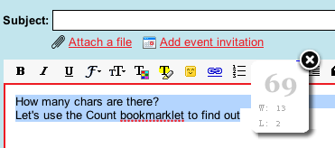

I’ve written several bookmarklets lately so I wanted to write a tutorial/Q&A to help newbees and share what I’ve learned. Please leave comments if you have questions or you think I got something wrong and good luck with your first bookmarklet.

What are bookmarklets?,
Bookmarklets are small plugins/extensions to your browser. They are called that way because they’re implemented using the browser’s built-in Bookmarks mechanism (although IE uses a different terminology, Favorites, they are still called bookmarklets even in IE jargon). Example bookmarklets are Count which I authored which counts characters of the text you select. There are plenty of other useful bookmarklet examples here as well.
How to install a bookmarklet?
Bookmarklet’s don’t really require installation. They are simply links you can add to your bookmarks toolbar. There are several ways to do that (depending on your OS and browser), so here’s a short explanation that tries to catch them all.
- Right click the bookmarklet link
- Select “Bookmark this link” (on FF) or similar wording in IE/other browsers
- That’s all, really
Now that your bookmarklet is installed, simply click it to use it. For example if you’ve installed the Count bookmarklet, when you want to count characters simply click the bookmark. So, bookmarklets are best described as “additional browser buttons”.
One tweak is that some browsers tend to hide their bookmarks folder, so you have to configure your browser to show it so you have all buttons at hand and don’t have to click through the bookmarks toolbar in order to get to them. It’s usually done by either right clicking the navigation bar area or similar technique.
A lot of browsers simply let you drag and drop the bookmarklet to the bookmarks toolbar, so that’s much easier.
There’s also a video I found that explains how to install (a different) bookmarklet here.
How to write a bookmarklet?
Alright, let’s get down to business and write some software!
This is your first bookmarklet: Say hello and here’s the code:
<a href="javascript:alert("Hello first bookmarklet world")">Say hello</a>
That’s easy, right? All you have to do is add a link at your web page and set the href of that link to javascript:… We’ll talk about this javascript: more later. Now all your users have to do is add this link to their bookmarks and that’s it.
What does javascript: stand for?
A URL is comprised of several sections. For example in http://www.google.com/ we have www.google.com as the host name and http as the protocol. Browsers know all sorts of protocols, to name a few http, https, ftp, irc and yes, javascript as well. Sometimes a browser relayes a protocol to the operating system, such as the case wtih irc or ed2k but at least for http, https and javascript the browser handles them by itself. So when you have an <a href=’javascript:…”> it actually tells the browser to run javascript when the user clicks on that link. A simple extension to this is what makes bookmarklet so powerful – if you have a bookmark wtih a link that starts with javascript: as its protocol, the browser will, instead of navigating to a different page, simply run that javascript in the context of the current page. This is great because now you’re able to add functionality to other pages. For example , you may count characters on any page you visit. Many bookmarklets operate on the current page, but they strictly don’t have to, they can be independent of the page such as the Say hello bookmarklet above, which simply doesn’t care about what page the user is currently browsing, but to me the real power of bookmarklets is to be able to interact with the page.
You may know about plugins/extensions/toolbars, which in many cases also operate on the “current page”, so if you’re wondering what’s the difference between an extension and a bookmarklet, that’s a good question, but we’ll get to that later.
Let’s write a non-trivial bookmarklet
In the previous example we had a simple bookmarklet that only says hello. That’s cute, but not that useful. Let’s do a real one then, one that counts the number of words on the current page.
First, let’s write just the javascript code, run it and only then turn it into a bookmarklet. I like to use firebug for writing short snippets of code and testing them, so just copy the code below, paste it into firebug console and run it.
var t = document.body.innerHTML; // Gets all body content
t = t.replace(/<(.|\n)*?>/g,''); // Removes all html tags
t = t.replace(/\s+/g,' '); // Crunch consecutive whitespaces
alert('Length: ' + t.split(' ').length); // split by spaces and count lengthNow stay tuned because this is important. To turn this piece of javascript code to a bookmarklet we’ll need to apply several transformations, so let’s do them one step at a time.
1. First step is trivial, remove comments.
var t = document.body.innerHTML;
t = t.replace(/<(.|\n)*?>/g,'');
t = t.replace(/\s+/g,' ');
alert('Length: ' + t.split(' ').length);2. Next we need to crunch it all to one line. Bookmarks should not have newlines in them (although some browsers are OK with that, let’s play it clean)
var t = document.body.innerHTML; t= t.replace(/<(.|\n)*?>/g,''); t = t.replace(/\s+/g,' '); alert('Length: ' + t.split(' ').length);Later we’ll introduce an automated tool that does all that, but for now it’s instructive that you do it yourself.
3. Next, wrap it all in a function construct. This is the most importance point, so pay attension.
(function(){var t = document.body.innerHTML; t= t.replace(/<(.|\n)*?>/g,''); t = t.replace(/\s+/g,' '); alert('Length: ' + t.split(' ').length);})()Let’s talk about what just happened here. We wrapped the code inside this weird construct (function(){…})(). What does it mean?
What you see here is an anonymous function definition followed immediately by the function execution. JavaScript is great in allowing anonymous functions and what we get from it is two important things. First we get namespace safety – if there was another variable on the page named t if will not get overrun. Bookmarklet need to be good citizens and if you run over the local page variable no one will want to use your bookmarklet so you have to be careful. Keep in mind that you have no control over what page your bookmarklet is run at, so you don’t know whether that page has already defined a variable named t or not. Now, you could have gotten away with using __my_ugly_bookmarklet_unique_variable_name as a somewhat unique var name on the page in hope no one gets as smart as you making up var names, but c’mon, this is way un-elegant. And there’s more.
The second thing you get from using the anonymous function construct is even more important – A single statement. Remember the talk about protocols before, the javascript: protocol? So, the thing is that javascript: protocol may only accept one statement. So if the statement is a simple alert() that’s fine but if your program has more than a single statement, (and that’s why we call them non-trivial) then you need to wrap all the statements in one big block. That block is this function construct.
So, let’s get back to the function construct and see what we have.
First, we have an anonymous function
Next, we wrap this function definition in braces to make sure associativity works for us:
And next, we invoke this function
(function(){...code...})()By invoking the function we effectively run the code inside the function, which is exactly what we need. OK, so that was the hard part, now the easy part.
4. Next, add an <a href=”javascript:” to it
<a href="javascript:(function(){var t = document.body.innerHTML; t= t.replace(/<(.|\n)*?>/g,''); t = t.replace(/\s+/g,' '); alert('Length: ' + t.split(' ').length);})()">Count words on page</a>So, with step 4 you have your bookmarklet ready. Let’s summarize all steps so far
0. Write the javascript code for the bookmarklet. This is the heart of your application where all logic goes. All the rest are more or less trivial plumbing once you get the hang of it. I use Firebug for testing small snippets of code, and usually just save the javascript I develop in a local file.
1. remove comments
2. crunch into one line
3. wrap in (function(){…})()
4. Add the <a href=”javascript code on an HTML page (this is optional by the way, only if you want other ppl to see your bookmarklet)
About code crunching, otherwise known as javascript-minification or compression, there are automated tools to help you do that. They remove comments, remove newlines and extra whitespaces, so what I do is keep the js file well formatted and only when I want to deploy it, I run it through the minifier. An online minifier version is also available, which is quite handy here and a downloadable minifier from Yahoo here
Now you are ready to write your first bookmarklet. In the next sections we’ll dig into more advanced techniques and some meta discussions.
Bookmarklets vs. extensions
A short recap: Bookmarklets are small extensions to the browser’s functionality implemented as a simple bookmark. What are browser extensions then (also called add-ons, sometimes plugins, sometimes toolbars etc)? They are also extensions to the common browser functionality. There are dozens of examples extensions such as the Google Toolbar, Yahoo, MSN and so many more. So what is the difference b/w a bookmarklet and an extension?
Well, there are many differences but I’ll only talk about a few which I think matter the most and would hopefully help you determine whether you want to write a bookmarklet or an extension
Functionality. Functionality wise I think extensions win. Browser extensions can do so much more than bookmarklets. They can open a sidebar, they can have as many buttons as they like (instead of just one), they can have more than just buttons, they can have text boxes, graphics, control the mouse cursor ans so much more. A user can play with the extension settings to personalize it etc. Bookmarklets are much simpler and don’t provide all that rich functionality. They are bookmarks, and they will always look like bookmarks, you can’t make them use a logo (except for your site’s favicon, but that’s lame and doesn’t work by default on all browsers). Functionality wise, extensions win. But wait, there’s more.
Ease of development. If you’ve read this tutorial you can write a bookmarklet. It’s that easy. To write a bookmarklet you need to know about the usual web stuff, javascript, css, html, but that’s all, no need to learn something specific except from what is in this blog. Extensions are a whole different story. Firefox extensions, which are relatively easy to make compared to IE toolbars make you learn about XUL and about the special firefox extensions registry, they make you create an xpi, an installable version etc. IE is much much worse in that sense. Now, all that is definitly possible of course, people have been doing it for a long time, but you have to admit this is order of magnitude more complex than the javascript, html and css you already know. In ease of development bookmarklets win.
Interoperability. When authoring a bookmarklet, just like authoring a web site, you write them for all browsers. All browsers have support for bookmarks, hence all browsers support bookmarklets. OTOH, not all browsers support extensions and those that do (IE, FF) have a whole different structure for doing that. If you choose the bookmarklet way, by definition you develop for all platforms. If you choose the extensions way you’d have to write one extension for IE (good luck with that), one for FF, you can’t write extensions for Safari, which happens to be my favorite browser, none for Opera and I rest my case. Interoperability wise, bookmarklets win.
User-friendliness. I don’t know. I think some users are more confirmable with extensions just because they are one-click to install (or several clicks) whereas bookmarklets require you to add a bookmark, which as silly as it may sound, some ppl are having real hard time with that. So I think the installation process of toolbars is better at least for some users. OTOH, I think advanced users much prefer bookmarklets b/c they feel more in control when installing them. When I install a browser extension I think very hard on whether this extension is going to slow my browser down, or wheather it’s going to change my layout, or whether it’s going to take some preceaus browser real-estate. As a minimalist I prefer bookmarkletrs as I’m in full control – they hardly take up space, they can’t operate and slow my browser down unless I click them, so I’m in control. But I see why some users prefer extensions. Let’s call it a tie then.
The bottom line is this: for your applicaton you should determine whether to use an extension or a bookmarklet according to the following criteria:
- What functionality do you want to provide? Some things just can’t be done using a bookmarklet.
- What browsers would you like to support? Not all browsers support extensions, and even those who do require you to rewrite your code for them
- Do you have time to develop an extension? In most cases extensions are order of magnitude harder to implement.
- What is your audience? It is going to be comfortable with a bookmarklet? Is it going to be comfortable with an extension? This is sometimes hard to figure out, BTW, but that’s how life is…
Advanced: Loading code from remote server
In the Count bookmarklet I authored I use jQuery to display a nice floating window and animations. I chose to use jQuery and animations make the whole thing look nicer. I could have gotten through with a simple alert() message but it just didn’t feel right.
Now, the challenge is twofold:
- bookmarklets have limited space in them, which means you can’t crunch so much code into them, and definitly not the whole jQuery library. I don’t remember what the exact limitation is and I’d bet different browsers have different limitation, but it’s safe to assume that 1024 chars are about the max since this is a normal limitation HTTP imposes in URLs. Anyway, even if it was 2000, 4000 or more that wouldn’t have been enough.
- Say you want to upgrade your bookmarklet – fix a bug or add a feature. If all the code would have been implemented inside the bookmarklet itself, you’d have to ask all your users who already installed that to remove and reinstall, then you’re in big trouble.
So, what you want to do is have a bookmarklet that actually loads javascriopt to the page from a remote server. That way it’s simple to ugdate your bookmarklet.
To load javascript to a page that’s actually already fully loaded we use a technique called dynamic script injection, which is common to other applications such as jsonp and here’s how it works:
var s = document.createElement('script'); // Create a script dom element
s.setAttribute('src', 'http://charcount.appspot.com/s/jquery.js'); // Set the element source to the js file you want to load
s.setAttribute('type', 'text/javascript');
document.body.appendChild(s); // attaching the element to the body (or to head) results in the browser loading the script and executing it. That's just how browser magic works, which is cool... all browsers do that!So the trick is to attach a <script> dom element to the head (or body) which results in browser execution. How cool is that? By the way, don’t try to use document.write(“<script..”), it will not work. Once a page is fully loaded calling document.write simply messes everything up and you’re likely to find your browser unstble if you choose to do that (beleive me, I tried  )
)
Loading a script from a remote server is very cool and it opens up interesting possibilities. You’re no longer bound to writing very very compact code and you can use 3rd party libraries, so that’s awesome. There are, however. a small tradeoff and a few gotchas:
- The tradeoff is in performance. If all your code is local the browser runs it very fast whereas if you have to load remote resources depending on your server availability, this may be slower. It’s usually not a big deal, but I had to mention this.
- You need to have a server. Or at least something static that can serve javascript.
- Gotcha: be careful not to load your script more than once. If the user clicks on your bookmarklet again and again you don’t want to load your js files over and over again. There’s a simple way to guard agains this, look at the example below.
To prevent your scripts from being loaded more than once you make use a guard, a variable or a page element that gets initialized in the js file and the bookmarklet code checks for its existence. Here’s an example from the Count bookmarklet:
javascript:(function(){if(document.getElementById('__wc_display')){__wc_refresh();return} // That was the guard. The rest of the code will load the js files
window.__wc_base='http://charcount.appspot.com/';var%20d=document;var%20s=d.createElement('script');s.setAttribute('src',__wc_base+'s/jquery.js');s.setAttribute('type','text/javascript');d.body.appendChild(s);s=d.createElement('script');s.setAttribute('src',__wc_base+'s/wc.js');s.setAttribute('type','text/javascript');d.body.appendChild(s);})()Bookmarklets Dos and Don’ts
DO: Be polite. Remember, you’re not running your own show here, you’re only a guest on some other page. Do what you need to do but don’t stand in the user’s way and make it use a bookmarklet-block (as if there’s something like that… I just made it up, but you get the point – be polite).
DON’T mess with user privacy. You’re a guest, don’t forget that. NEVER look at cookies. Users trust you when they install, don’t betray that trust. Both bookmarklets and browser extensions are able to compromise security.
DO: graceful degregate. In case your server is not up or something else is going wrong, make sure that your bookmarklet leaves the browser in good condition. No javascript errors, no broken page etc.
DO: Test multiple browsers. It’s unfortunate, but very common for code to work perfect on one browsr and be completely broken on another. You must test at least the commonly used browsers, it’s a pain, but it’s a must.
DONT burn CPU, don’t leak memory. That’s true not only for bookmarklets, but is especially true for them. Messing with your own site is one thing, but messing with another site is a whole different story. You’re a guest, behave!
I hope this tutorial was useful. Pleae feel free to leave cometns if you feel something is missing.
 All programmers at all languages are familiar with the concept of default values.
All programmers at all languages are familiar with the concept of default values.